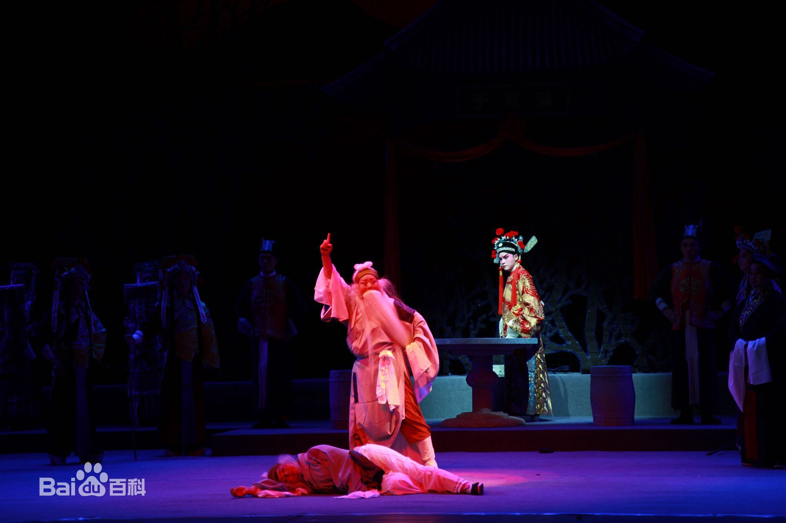
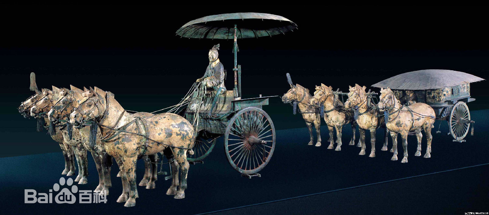

历史文化
-
NO.1

秦腔秦腔又称乱弹，乱弹源于西秦腔，而梆子腔则来源于老秦腔（东路秦腔，同州梆子），是一种非常古老的传统戏曲剧种。主要流行于中国西北地区的陕西、甘肃、青海、宁夏、新疆等地，又因其以枣木梆子为击节乐器，所以又叫“梆子腔”，俗称“桄桄子”（因以梆击节时发出“恍恍”声）。
-
NO.2
皮影
皮影戏，又称“影戏”或“影子戏”，是一种以兽皮或纸板做成的人物剪影，在灯光照射下用隔亮布进行演戏，是中国民间广为流传的傀儡戏之一。表演时，艺人们在白色幕布后面，一边操纵戏曲人物，一边用陕西特色的碗碗腔或弦板腔唱述故事，同时配以打击乐器和弦乐，有浓厚的秦人气息。
-
NO.3

秦始皇陵秦始皇陵是中国历史上第一位皇帝嬴政（前259—前210年）的陵寝，中国第一批世界文化遗产、第一批全国重点文物保护单位、第一批国家AAAA级旅游景区，位于陕西省西安市临潼区城东5千米处的骊山北麓。